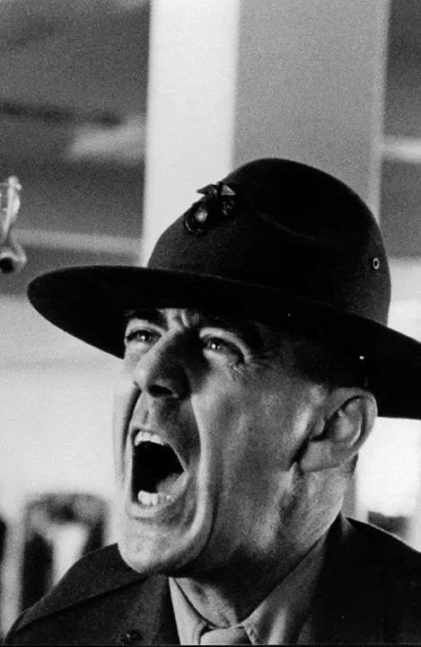

La chaqueta metálica
Full Metal Jacket (conocida en Hispanoamérica como Nacido para matar o Cara de guerra y en España como La chaqueta metálica) es una película bélica anglo-estadounidense dirigida por Stanley Kubrick, distribuida por Warner Bros., y estrenada en 1987. Basada en la novela Un chaleco de acero, del escritor Gustav Hasford, quien estuvo como periodista de guerra en el conflicto de Vietnam, tiene como protagonistas a Matthew Modine, R. Lee Ermey, Vincent D'Onofrio y Adam Baldwin. La historia sigue a un pelotón de infantes del Cuerpo de Marines de los Estados Unidos a través de su entrenamiento en el centro Marine Corps Recruit Depot Parris Island, en Carolina del Sur. Desde ese lugar, se centra principalmente en dos soldados, Bufón (Modine) y Patoso (D'Onofrio), que tienen que lidiar con su instructor, el sargento de artillería Hartman (Ermey), quien tiene talante abusivo. Por otro lado, la segunda mitad de la película retrata las experiencias de dos de los marines del pelotón en las ciudades vietnamitas de Đà Nẵng y Huế, durante la ofensiva del Tet, en el contexto de la guerra de Vietnam.
En un principio Kubrick quería hacer una película sobre el Holocausto, aunque tras hablarlo con el guionista Michael Herr, cambió de idea en favor de una historia sobre la guerra de Vietnam. El director descubrió la novela Un chaleco de acero y se puso en contacto con Hasford en 1985, a pesar de que llevaba estudiando tanto el libro como aspectos sobre la guerra desde 1983, tras haberlo leído un año antes. Hasford, Herr y Kubrick se unieron para elaborar el guion; Hasford comunicaba sus ideas por teléfono y no vio a Kubrick en persona hasta después de redactado el guion. Kubrick eligió el nombre en referencia a la munición full metal jacket, pues pensó que el del libro no sería adecuado para la película.
El rodaje se produjo en Inglaterra entre 1985 y 1986. Kubrick consiguió cuatro tanques M41, procedentes de un coronel del ejército belga, y varios helicópteros Westland Wessex pintados de verde marino para hacerlos pasar por los Sikorsky H-34 Choctaw. También adquirió algunas armas como rifles, escopetas lanzagranadas M79 y ametralladoras M60. Se usó una fábrica de gas en desuso llamada Beckton Gas Works en representación de Huế después de los ataques, así como una antigua estación de la Real Fuerza Aérea británica y una base del ejército británico para el campo de entrenamiento de Parris Island. La composición de la banda sonora recayó en la hija de Stanley, Vivian Kubrick, quien usó el alias «Abigail Mead» para crear una lista con canciones como «Paint It, Black», compuesta por el grupo inglés The Rolling Stones, para los créditos finales.
Tuvo su preestreno el 17 de junio de 1987, en la ciudad estadounidense de Beverly Hills (California). Ermey recibió elogios por parte de la crítica tras su interpretación del sargento Hartman; escribió gran parte de sus frases y no estaba programado que ocupara el papel, pues este recaía en Tim Colceri, relegado a interpretar a un artillero de helicóptero después de que Kubrick se fijara en Ermey. La película obtuvo una recaudación de 46,35 millones de dólares en sus primeras semanas de estreno, y alrededor de 120 millones en todo el mundo hasta 1998. Kubrick, Herr y Hasford recibieron una nominación a los premios Óscar en la categoría al mejor guion adaptado, así como otros mismos resultados y algunas consecuciones en otros certámenes.
1968